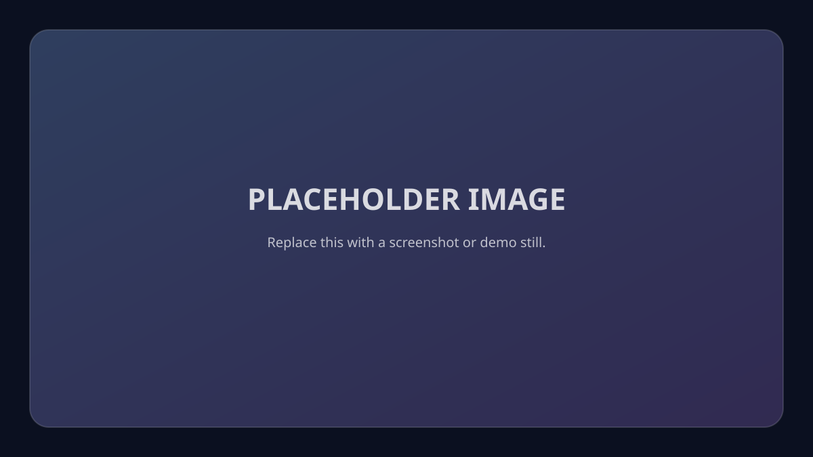

Reverse-Engineering Tooling (Java)
Timeline: PLACEHOLDER (e.g., 2024–2026) · Role: Solo developer · Focus: stability, compatibility, instrumentation.
1) Problem
I needed a reliable way to add/adjust behaviors in a legacy Java client where internal names and structures can change between releases (including obfuscation). Manual updates were slow and brittle.
2) Goals & constraints
- Stable hooks despite renamed/obfuscated methods
- Safe failures (don’t crash the client if a hook changes)
- Fast iteration: clear logs, reproducible builds, easy version bumps
- Constraints: obfuscation changes, limited observability, client-side constraints.
3) Solution overview
I built a small tooling approach around bytecode instrumentation and modular patches. Each patch targets a narrow behavior, validates it’s hooking the expected signature, and logs clearly on success/failure. When upstream changes happen, the update process becomes “find renamed symbol → update mapping → rebuild,” rather than rewriting logic.
4) Key technical highlights
- Instrumentation pipeline: isolated patch units, load-order control, and safety guards.
- Compatibility strategy: centralized mapping updates for obfuscation bumps.
- Crash resistance: try/catch around mounts + explicit logging of hook success/failure.
- Packaging: consistent build outputs and manifests (so artifacts run predictably).
5) Hard problems & how I solved them
- Challenge: upstream renamed internals causing hooks to fail → Fix: mapping-based updates + verification checks → Result: faster updates, fewer regressions.
- PLACEHOLDER: Add one “deep debugging” story with screenshots/log snippets (sanitized).
6) Results
- More maintainable patch system with predictable update workflow.
- PLACEHOLDER: Add metrics (time-to-update, crash reduction, or performance improvements).
7) Security considerations
- Least privilege mindset: narrow hook scope and avoid broad interception when unnecessary.
- Safe defaults: disable modules when verification fails.
8) What I’d do next
- Automated verification harness for detecting broken hooks earlier
- Better observability tooling (structured logs, diagnostics bundle)
9) Media

PLACEHOLDER caption: architecture diagram or before/after behavior.